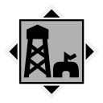

Map
Nearby locations
The 10 closest locations, measured in a straight line between the map markers (1 world unit is 1 metre), with the direction to go from here.
| Location | Kind | Region | Distance | Direction |
|---|---|---|---|---|
 Readiness Storage 047 | Military base | Himfjäll | 110 m | W |
 Gudlögs Stenar Gudlögs Stenar | Tourist attraction | Himfjäll | 195 m | S |
 Sunnanvall Sunnanvall | Settlement | Himfjäll | 229 m | W |
| Digerhällen Artillery Base | Military base | Himfjäll | 315 m | SW |
 Österhällan Marine Center Österhällan Marine Center | Port | Himfjäll | 477 m | NW |
 Bergahyttan Hunting Club Bergahyttan Hunting Club | Campsite | Himfjäll | 713 m | SW |
| Readiness Storage 030 | Military base | Himfjäll | 761 m | W |
| Bergsfrugrottan (East) | Tourist attraction | Himfjäll | 847 m | NW |
| Linderbar After Ski | Settlement | Himfjäll | 852 m | W |
| Österhällan | Settlement | Himfjäll | 938 m | NW |
Safehouse
There is a safehouse here: Klacksundsfyren (19 m from the location marker).
Loot
The location's files list 73 loot crate spawn points. These are the crates your save counts for this location's loot progress.
Placed loot within 200 m that is closer to Klacksundsfyren than to any other location (from the interactive map's Extra Locations layer).
| Category | Count | Breakdown |
|---|---|---|
| Weapons | 1 | Q3 1 |
| Items | 18 | Explosive Gas Tank 5, Gasoline 3, Boombox 2, Simple First Aid Kit 2, Standard First Aid Kit 2, Advanced First Aid Kit 1, Grenade 1, Radio 1, Semla 1 |
| Crate spots (map layer) | 108 | Ammo boxes 31, Apparel packs 31, Equipment boxes 27, Bodies 9, Weapon boxes 7, Car hoods 3 |
| Attachments | 1 | Q1 1 |
From the game files
Two crate numbers. The crate spawn points are the loot crate spawn points listed in the location files: what your save tracks for a location's loot progress. The crate spots (map layer) are every crate spot of the interactive map's loot layer within 200 m that is nearer to this location than to any other, whichever game file it comes from, so the two numbers rarely match. Neither means a crate is always there: the game may leave a spot empty.
Weapons, attachments and other single items placed here:
| Item | Quality | Count |
|---|---|---|
| M/46 "Kpist" SMG (Good) | Good | 1 |
| Machine Gun Silencer (Dilapidated) | Dilapidated | 1 |
Missions
Missions whose name, briefing or steps mention Klacksundsfyren.
| Mission | Type | Region | Summary |
|---|---|---|---|
| A Light in the Dark | Side Alpine Unrest | Himfjäll (Alpine Unrest) | Go to the Klacksundsfyren lighthouse to find the surviving family |
From the game files
Distances are straight lines on the map between marker positions. A location's area in the game is not a circle, so the 300 m and 200 m radii on this page are a practical approximation, not the game's own borders.